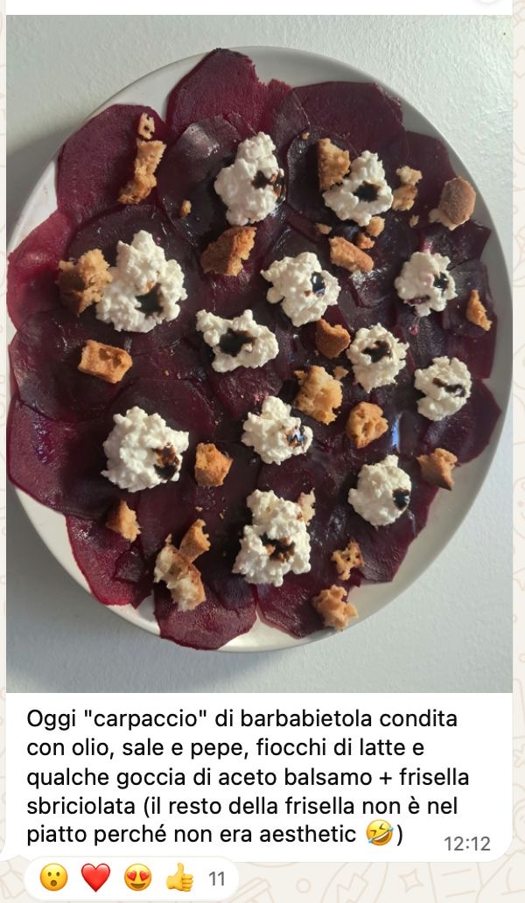
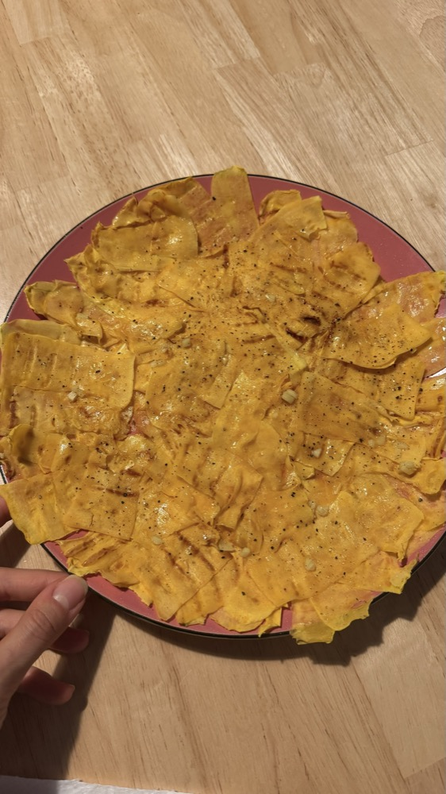

Mariastella Pollini · Biologa Nutrizionista
Questa ricetta nasce da C., una persona che segue il mio percorso e che nella community aveva condiviso un carpaccio di barbabietola.

Ho guardato la sua foto e mi sono detta: e se provassi a farlo con la zucca? Ed eccolo qui!
È anche questo il bello di essere parte di una community: condividere quello che mangiamo, prendere spunto dagli altri e lasciarsi venire nuove idee. Senza dover seguire sempre una ricetta alla lettera.
È proprio da questo principio che parte il mio modo di lavorare: niente menu rigidi da seguire, ma spazio ai tuoi gusti e alla tua creatività.
All'inizio ti accompagno con tante idee e combinazioni già pronte, ma soprattutto ti spiego il meccanismo che c'è dietro, dandoti una vera e propria Cassetta Degli Attrezzi personalizzata. Così, pasto dopo pasto, impari ad adattare il metodo ai tuoi gusti, alle tue abitudini e alla tua quotidianità, fino a farlo diventare sempre più spontaneo e pratico.

Lo sapevi che la senape è una delle salse a più ridotto contenuto di grassi in assoluto? Se ti piacciono i gusti decisi, è un ottimo insaporitore.
Questo carpaccio è un contorno di verdura che apporta anche grassi grazie all'olio.
Per trasformarlo in un pasto completo, ti basta aggiungere una fonte di carboidrati (pane, riso, patate, pasta...) e una di proteine (uova, pesce, legumi, carne, formaggio).
Ogni pasto si costruisce così. Quando impari a riconoscere cosa c'è nel piatto e cosa gli manca, mangi quello che hai voglia senza dover seguire uno schema, e lo fai con consapevolezza.